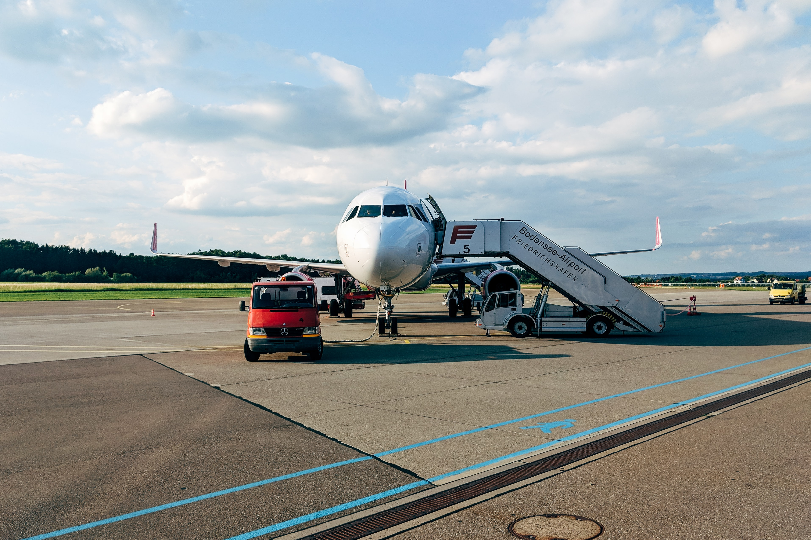
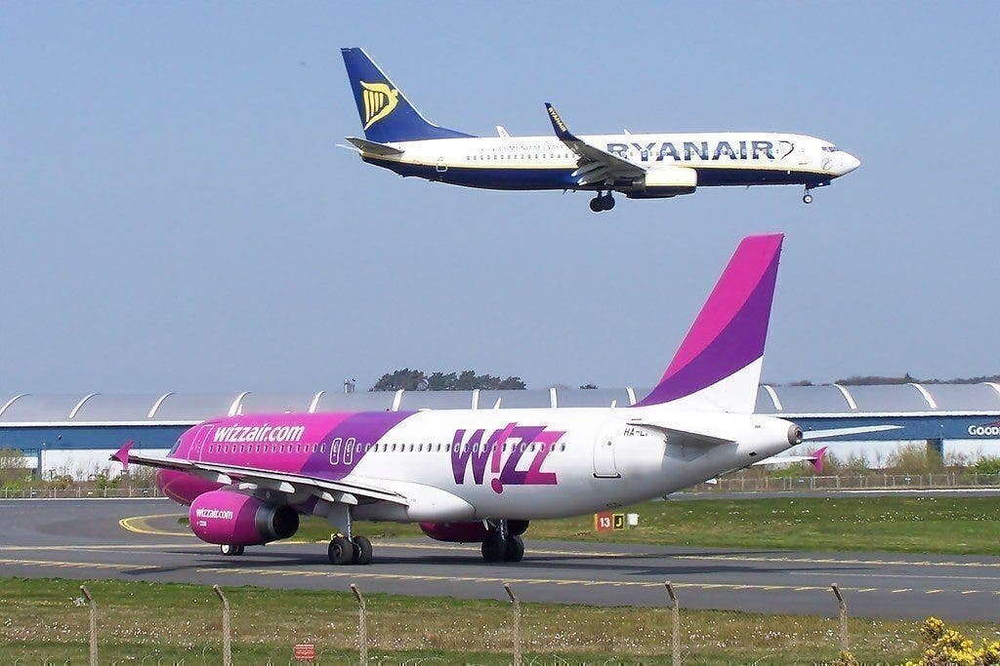

Wizz Air va zbura de la București către Palma de Mallorca începând din 9 august
12 iulie 2020

Compania low-cost Wizz Air a anunțat astăzi o nouă rută din București spre Palma de Mallorca cu două zboruri pe săptămână, începând din 9 august 2020.
Pasagerii pot deja să rezerve bilete cu prețuri ce pornesc de la 119 de lei, cursele fiind operate joia și duminica.
Mallorca, cea mai mare dintre Insulele Baleare, este una dintre cele mai populare destinații de vacanță din Europa.
“Continuăm să ne extindem rețeaua de rute în România cu o altă destinație interesantă de vacanță.
Cu noua rută de la București la Palma de Mallorca, aducem mai multe oportunități de călătorie pentru românii care se pot bucura de călătorii
în siguranță la bordul aeronavelor noastre moderne”, a declarat George Michalopoulos, Chief Commercial Officer al Wizz Air.
Compania Wizz Air a anunțat la sfârșitul lunii trecute opt noi rute de la București către destinații din Italia, Norvegia, Germania și Grecia,
zborurile urmând să fie disponibile din august. Noile rute sunt de la București la Cagliari (Sardinia / Italia), Copenhaga și Bergen (Norvegia),
Hamburg, Karlsruhe / Baden-Baden și Memmingen (Germania), Santorini și Mykonos (Grecia).
Wizz Air a anunțat noi protocoale pe tot parcursul zborului: atât echipajul de cabină,
cât și pasagerii sunt obligați să poarte măști, echipajul de cabină având și mănuși.
Aeronavele Wizz Air sunt supuse periodic unui proces de nebulizare cu o soluție antivirală și toate avioanele sunt dezinfectate peste noapte cu aceeași soluție antivirală.
Fiecare pasager primește la intrarea în aeronavă șervețele igienizante,
revistele de la bord au fost scoase din aeronavă, iar pentru toate achizițiile de la bord se recomandă plata contactless.
Sursa: Revista Biz
Cum de WizzAir e atat de ieftin?
3 iulie 2020

Wizz Air este un transportor european cu costuri mici, cu sediul în Budapesta, Ungaria, cu operațiuni în extindere rapidă în toată regiunea și chiar atât de departe ca Abu Dhabi în Emiratele Arabe Unite. Fondată în 2003, compania aeriană a devenit una dintre cele mai importante companii aeriene din Europa. În cazul în care zborurile cu o durată de două ore durează doar 21 USD în fiecare sens, cum poate compania aeriană să ofere tarife la costuri atât de mici? Să aflăm.
Un „accent necontenit pe costuri”
În timp ce numele și categoria „transportator low-cost” pot fi utilizate pentru a descrie prețurile biletelor ieftine, este vorba mai mult despre costul scăzut al operațiunilor companiei aeriene. Conform unuia dintre ultimele rapoarte de câștiguri ale Wizz Air, acesta are un „accent necontenit asupra costurilor”.
Iată câteva moduri în care compania aeriană își reduce costurile de operare:
-O flotă cu un singur tip (familia de avioane Airbus A320) înseamnă că tot echipajul de la sol, echipajul de cabină și piloții trebuie să se antreneze doar pentru un singur model. Acest lucru înseamnă, de asemenea, că dacă există o problemă cu o aeronavă, este mult mai ușor să înlocuiți o înlocuire cu aceeași configurație de scaun. Această schimbare de avion, desigur, nu ar fi la fel de ușoară între un A320 și un A321.
-În plus, prin majorarea majorității flotei sale, compania aeriană se poate asigura că are o colecție tânără de aeronave eficiente și fiabile. Acest lucru diminuează timpul de întrerupere pentru întreținere, precum și costurile cu combustibilul - în mod normal, cea mai mare cheltuială pentru o companie aeriană.
Cele mai ieftine bilete Wizz Air sunt de obicei pentru zboruri care pleacă sau aterizează la ore mai puțin decât cele ideale. Aceasta ar putea însemna plecarea extrem de devreme dimineața sau intrarea pe ultimul zbor al nopții. În unele cazuri, Wizz Air poate fi găsit într-un terminal separat de satelit sau linie aeriană - unul care este dezbrăcat de confortul obișnuit al aeroportului, la care mulți dintre noi s-au obișnuit. Acest lucru reduce în continuare costurile operațiunilor companiei aeriene pe aeroporturi.
Economie de scară
 WizzAir are una din cele mai dense configuratii de cabina
WizzAir are una din cele mai dense configuratii de cabina
Wizz Air, ca și alți transportatori cu costuri reduse, are un model de afaceri bazat pe economii de scară. În loc să obțină un profit mare de la fiecare călător, compania aeriană obține un profit mai mic în timp ce transportă mai mulți pasageri. Acesta este motivul pentru care nu veți găsi o cabină premium pe niciunul dintre planurile Wizz Air.
De fapt, compania aeriană are una dintre cele mai dense configurații de pe piață. Airbus A321 are 230 de locuri într-o configurație de o singură clasă. Aceasta este cu mult mai mult decât configurația europeană A321 a British Airways, care are 54 în afaceri și 123 în economie. Desigur, acest lucru costă confortul pasagerului: pasul scaunului lui Wizz este slab de 28 de centimetri, în timp ce standardul pentru majoritatea companiilor aeriene (chiar Ryanair) este de 30 de centimetri. Pe partea înclinată, compania aeriană se poate strecura în câteva rânduri suplimentare de locuri și poate vinde mai multe bilete.
Mai mult, compania aeriană asigură zborul aeronavelor sale cât mai des posibil. Aceasta înseamnă timpi de transformare strânși la aeroporturi, ceea ce face ca procesul de îmbarcare și declinare să fie cât mai rapid posibil. O parte din acest lucru este obținut prin îmbarcare folosind atât ușile din față cât și cele din spate ale aeronavei prin scări.
Un bilet extrem de bază
Răspunsul mai relatabil pentru cei care călătoresc pe Wizz Air este faptul că tarifele postate de compania aeriană lasă mult. În timp ce companiile aeriene cu servicii complete ar putea avea o gustare gratuită și un serviciu de băuturi, aceasta este absentă de la Wizz Air.
Experiența pasagerilor este esențială și în alte moduri. Biletul de avion inițial pe care îl vedeți nu include bagajele verificate sau chiar un transport de marfă completă. Mai degrabă, pentru tariful de bază, sunteți limitat la ceea ce se poate încadra sub scaunul din fața voastră.
Orice altceva ce te-ai putea aștepta să fie inclus în experiența de zbor este redus și costă suplimentar. Aceasta include lucrări precum selecția scaunelor și check-in-ul în aeroport.
Concluzie

După cum puteți vedea, motivele pentru care biletele Wizz Air sunt atât de ieftine sunt similare cu mulți alți operatori de buget: lăsă „extrasele” și lasă clienții să plătească taxe suplimentare pentru ei. La fel ca și alți operatori cu buget, Wizz Air depinde, de asemenea, de un volum mare de zboruri cu o configurație de mare densitate la bord pentru a împacheta cât mai mulți pasageri.
Diferența notabilă pare a fi faptul că locul Wizz Air este mai mic decât competiții europeni Ryanair și EasyJet.